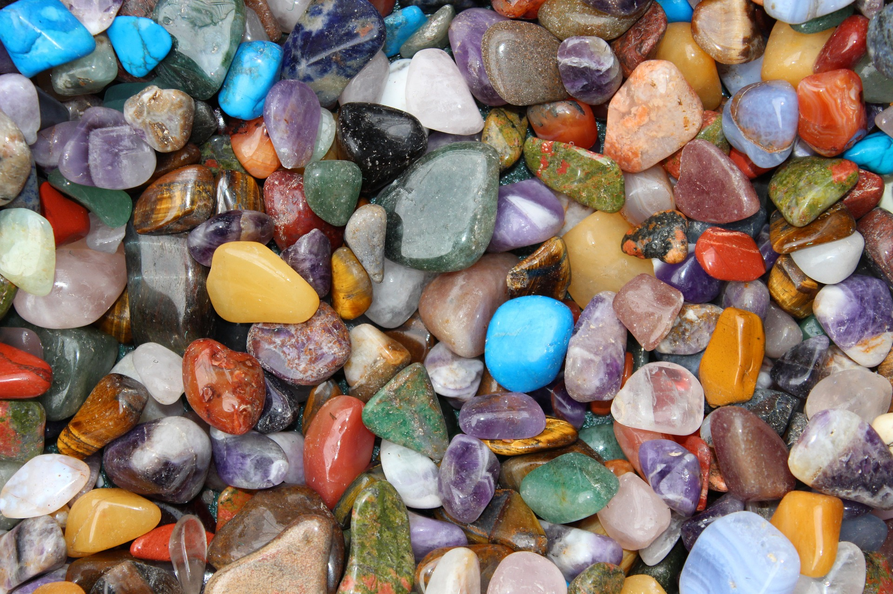

NATURAL STONES
Different types of natural stones/gemstones

Beautiful gemdtones from all around the world
Details about some of famous gemstones
- Diamond:
- The diamond is certainly the most popular of the major gemstones. It is a myth that diamonds are rare. Yes, they used to be until the African supplies were discovered. but de Beers controls 90% of the world's diamond mines and keeps vast quantities held in reserve to control the retail price with supply and demand.
- Emerald:
- Emeralds are a form of the mineral beryl, a family that also includes aquamarine and morganite.Most emeralds come from deposits in Africa and South America, where they can grow quite big - up to 180,000 carats!
- Ruby:
- Genuine rubies are amongst the most expensive and valuable gemstones you can buy. Rubies are a red form of the mineral corundum, with all other colours and forms of corundum being called Sapphire.
- Amethyst:
- Amethyst is one of the original Cardinal Gemstones, but not one of the modern Major Gemstones. In the Old World, amethyst was considered rare and precious, but huge deposits were found in Brazil in the 19th century.
For further information about these and other gemstones you can visit : www.gemsociety.org